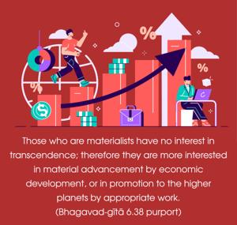
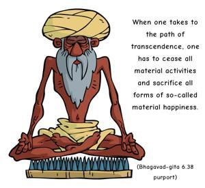

O mighty-armed Kṛṣṇa, does not such a man, who is bewildered from the path of transcendence, fall away from both spiritual and material success and perish like a riven cloud, with no position in any sphere?


There are two ways to progress. Those who are materialists have no interest in transcendence; therefore they are more interested in material advancement by economic development, or in promotion to the higher planets by appropriate work. When one takes to the path of transcendence, one has to cease all material activities and sacrifice all forms of so-called material happiness. If the aspiring transcendentalist fails, then he apparently loses both ways; in other words, he can enjoy neither material happiness nor spiritual success. He has no position; he is like a riven cloud. A cloud in the sky sometimes deviates from a small cloud and joins a big one. But if it cannot join a big one, then it is blown away by the wind and becomes a nonentity in the vast sky. The brahmaṇaḥ pathi is the path of transcendental realization through knowing oneself to be spiritual in essence, part and parcel of the Supreme Lord, who is manifested as Brahman, Paramātmā and Bhagavān. Lord Śrī Kṛṣṇa is the fullest manifestation of the Supreme Absolute Truth, and therefore one who is surrendered to the Supreme Person is a successful transcendentalist. To reach this goal of life through Brahman and Paramātmā realization takes many, many births (bahūnāṁ janmanām ante). Therefore the supermost path of transcendental realization is bhakti-yoga, or Kṛṣṇa consciousness, the direct method.